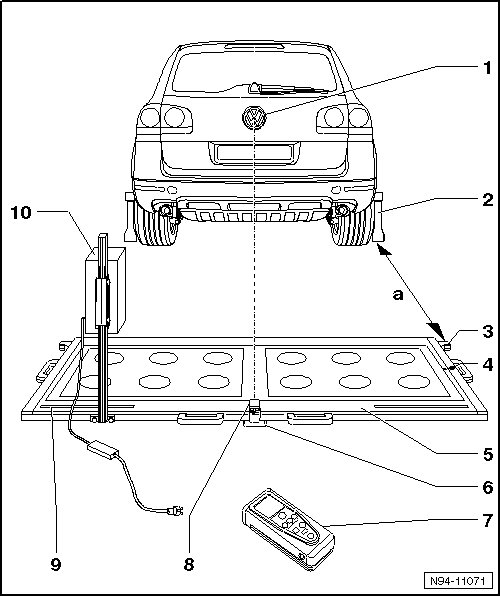
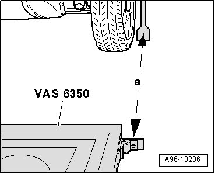
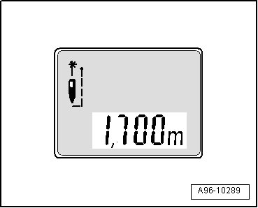
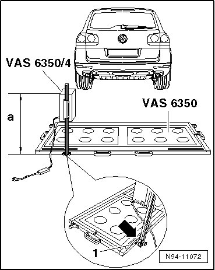
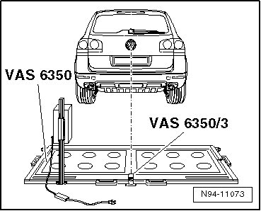
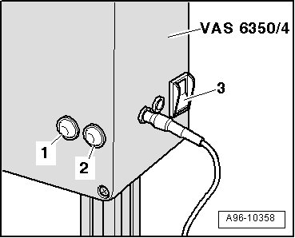
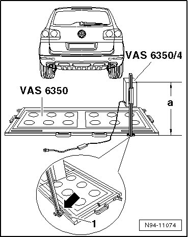

Side Assist, Calibrating
Side Assist, Calibrating
The left Lane Change Assistance Control Module (J769) (master) or right Lane Change Assistance Control Module 2 (J770) (slave) is combined into one unit with the radar sensor for the respective side. They are located behind the rear bumper cover and must be calibrated after:
• removal and installation of the bumper cover
• removal and installation of one or both lane change assistance control modules
• each time the installation location of a lane change assistance control module is changed
Before the calibration procedure can be performed with the Vehicle Diagnosis, Testing and Information System (VAS 5051B), considerable preparation work must be performed --> [ Preliminary Work for Calibration ].
--> [ Preparing for Calibration ]
--> [ Preliminary Work for Calibration ]
--> [ Lane Change Assistance Control Modules, Calibrating ]
Preparing for Calibration

1 Volkswagen logo
• The laser point is aligned on the center of the Volkswagen logo
2 Wheel center sensor (VAS 6350/1)
• with wheel bolt adapter SW 16 and measuring paddle
3 Catch bracket
• for mounting distance laser (VAS 6350/2) for distance measurement
• Distance to wheel center sensors (VAS 6350/1) on rear wheels: Dimension - a - = 1700 ± 2 mm.
4 Water level
• on Calibration Device (VAS 6350)
• to check horizontal position of Calibration Device (VAS 6350)
5 Calibration Device (VAS 6350)
6 Plastic foot
• Qty. 3
• adjustable in order to adjust horizontal position of Calibration Device (VAS 6350)
7 Spacing laser (VAS 6350/2)
• for distance measurement
• Usage --> operating instructions
8 Line Laser (VAS 6350/3)
• with "Laser eye protection"
• on Calibration Device (VAS 6350)
• switching on and off --> operating instructions
9 Measurement scale
• for positioning Lane Change Assistance Calibration Device (VAS 6350/4)
• Dimension to be adjusted measuring point on steel ruler = 773 mm
10 Lane Change Assistance Calibration Device (VAS 6350/4)
• is moved from right to left side of measuring field during calibration
• when installed correctly, vehicle electrical system voltage line must be connected at bottom left of calibration device (as seen in direction of travel)
Preliminary Work for Calibration
Before the calibration procedure can be performed with the Vehicle Diagnosis, Testing and Information System, considerable preparation work must be performed.
Requirements:
• Place vehicle on a solid, level surface
• Activate parking brake - vehicle must not move during measurement
• Place front wheels in straight-ahead position - steering wheel in 0 position
• On vehicles with air suspension, set vehicle height to middle position (display in instrument cluster display)
• Remove sticker with metal foil from bumper cover if necessary
• No persons may be in the vehicle interior during the measurement
• Do not open and close the vehicle doors during calibration
Special tools, testers and auxiliary items required
• Vehicle Diagnostic, Testing and Information System with diagnostic cable (VAS 5051/5 A)
• Calibration Device (VAS 6350)
- Connect Vehicle Diagnosis, Testing and Information System (VAS 5051B) with Diagnostic Cable (VAS 5051/5 A).
• If a malfunction indication is displayed --> Operating instructions of (VAS 5051B).
- Switch on ignition.
- Secure three SW 19 wheel bolt adapters for wheel bolts on each Wheel Center Sensor (VAS 6350/1).

- Insert measuring paddle on both wheel center sensors (VAS 6350/1) and secure with lock nut.
- Place Wheel Center Sensor (VAS 6350/1) on wheel bolts on both rear wheels.
• Wheel center sensor rotation center must be in wheel rotation center.
• Place Wheel Center Sensor (VAS 6350/1) on wheels so that "anti-theft wheel bolts" are not connected with wheel center sensor.
- Adjust measuring paddle with aid of lock nuts so that they move freely just above the floor.
• The measuring paddles must move easily.
• The measuring paddles must be vertical.
- Position Calibration Device (VAS 6350) at distance - a - from rear wheels.

• Dimension - a - = 1700± 0.08 in.
- Switch distance laser (VAS 6350/2) on with ON button.

Display on (VAS 6350/2):
• "- - - m"
• Laser is switched on at same time.
- Hold the distance laser (VAS 6350/2) - 2 - flush against the catch bracket, as shown in the illustration, for the distance measurement.

• The distance laser (VAS 6350/2) lie firmly against catch bracket.
- Ensure "laser beam" for distance measurement hits the lower enlarged portion of the measuring paddle - 1 -.
If this is not the case, measure paddle height must be corrected using lock nuts on Wheel Center Sensor (VAS 6350/1).
- Briefly press ON button for distance measurement.

Display on (VAS 6350/2):
• "1.700 m" (specified value: 1700 ± 2 mm).
- Repeat measurement procedure from left catch bracket to measurement paddle on left rear wheel.
• The distance value must be the same on both sides.
If both measured values are not the same, adjust Calibration Device (VAS 6350) accordingly.
- Secure lane change assistance calibration device (VAS 6350/4) at left rear of Calibration Device (VAS 6350) mount.

• When installed correctly, vehicle electrical system voltage line must be connected at bottom left of calibration device (as seen in direction of travel).
• Dimension - a - = 850 mm (measured from upper edge of calibration device to workshop floor).
- The adjustment dimension is set with the measuring point - arrow - on the base of the calibration device on the scale of the steel ruler - 1 -.
• Left setting = 30.43 in (read on measurement scale - 1 -).
- Connect lane change assistance calibration device (VAS 6350/4) to vehicle electrical system voltage.
- Using the bubble level (level indicator) - arrow -, bring the Calibration Device (VAS 6350) into a horizontal position by turning the plastic bases.

- Put on "Laser eye protection".

- Switch Line Laser (VAS 6350/3) on Calibration Device (VAS 6350) on.
- Align the entire Calibration Device (VAS 6350) so that the laser beam shines on the center of the vehicle rear above the VW logo.
- Check right and left distance between catch bracket on Calibration Device (VAS 6350) and measuring paddle - 1 - on wheel sensors again.
• Specified value: 1700 ± 0.08 in
Lane Change Assistance Control Module, calibrating --> [ Lane Change Assistance Control Modules, Calibrating ].
Lane Change Assistance Control Modules, Calibrating
• Before the actual calibration procedure for the lane change assistance control modules, the Calibration Device (VAS 6350) must be set up as described in chapter --> [ Preliminary Work for Calibration ].
Special tools, testers and auxiliary items required
• Vehicle Diagnostic, Testing and Information System (VAS 5051B) with diagnostic cable (VAS 5051/5 A)
• Calibration Device (VAS 6350)
The following should not occur during the calibration procedure:
• Vehicle doors must not be opened or closed.
• People should not sit in the vehicle.
• People should not go between the vehicle and the lane change assistance calibration device (VAS 6350/4).
Procedure
- Switch lane change assistance calibration device (VAS 6350/4) on at power switch - 3 -.

• The green LED - 1 - must light up.
• If the red LED - 2 - lights up: Check lane change assistance calibration device (VAS 6350/4).
- In Vehicle Diagnostic, Testing and Information System (VAS 5051A), select operating mode "Guided Fault Finding ".
- Using the "Go To" button, select "Functions/Component selection" and the following menu options in sequence:
• Body
• Body repair procedures
• 01 - On Board Diagnostic (OBD) capable systems
• Lane Change Assistance
• Functions
• Calibration - lane change assistance
- Follow further instructions on display of (VAS 5051B).
During the course of the program, a request is made to switch the lane change assistance calibration device (VAS 6350/4) from the left to the right side of the Calibration Device (VAS 6350).

- Switch lane change assistance calibration device (VAS 6350/4) off and move device.
• When installed correctly, vehicle electrical system voltage line must be connected at bottom left of calibration device (as seen in direction of travel).
• Dimension - a - = 850 mm (measured from upper edge of calibration device to floor).
• Right setting = 30.43 in (read on measurement scale - 1 -).
- Switch lane change assistance calibration device (VAS 6350/4) on at power switch - 3 -.
• The green LED - 1 - must light up.
- Follow further instructions on display of (VAS 5051B).
After successful lane change assistance calibration, switch the ignition off and disconnect the diagnostic connector.